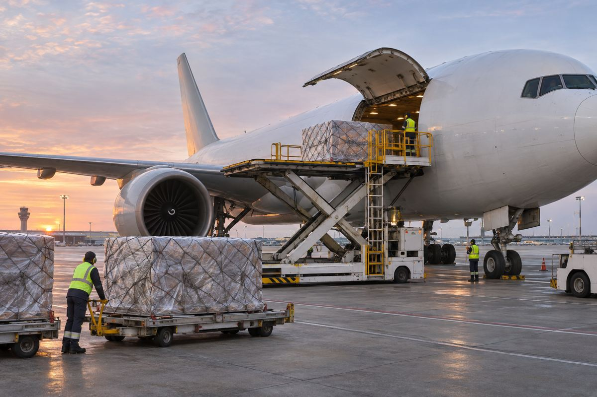

항공 / EXPLAINED
에미레이트, 밀라노–뉴욕 화물기 주 1회 신설…12월 5일 시작
기존 여객기 하부 화물칸에 더해 777 화물기의 메인덱 공급을 추가한다.

에미레이트 스카이카고가 12월 5일부터 밀라노 말펜사와 뉴욕 JFK를 연결하는 주 1회 화물기 서비스를 시작한다고 11월 10일 발표했다. 투입 기종은 보잉 777-F이며 편당 약 100톤의 적재 능력을 제공한다는 계획이다. 발표일과 실제 운항 예정일 사이에는 약 한 달이 있다. 회사는 이 노선으로 의약품과 고급 소비재, 산업용 부품 등 이탈리아 북부의 수출 수요를 지원한다고 설명했다.
스카이카고는 두바이를 거점으로 하는 에미레이트의 항공 화물 사업이다. 전용 화물기뿐 아니라 여객기의 아래쪽 화물칸도 사용한다. 밀라노에서 뉴욕으로 향하는 기존 여객편에도 주당 100톤 넘는 하부 화물칸 공급이 있다는 것이 회사 설명이다. 새 편의 약 100톤은 화물기 한 편의 계획 적재량이고, 기존 100톤 이상은 한 주의 여객편 공급 합계다. 단위 기간과 운항 형태가 달라 숫자만 보고 같은 서비스를 한 번 더 추가한다고 해석하기 어렵다.
메인덱을 쓰는 이유
전용 화물기는 객실에 해당하는 위쪽 공간에도 화물을 실을 수 있다. 여객기 하부 화물칸과는 화물문 크기와 적재 구성이 달라 큰 팔레트나 산업용 화물의 선택지가 늘어날 수 있다. 실제 접수 가능 여부는 화물의 치수와 무게, 포장, 위험물 규정에 따라 정해진다. 약 100톤이라는 최대 능력만으로 모든 크기의 화물을 한 번에 보낼 수 있다고 판단할 수는 없다. 의약품처럼 온도 조건이 중요한 품목은 출발 전 보관과 공항 처리, 도착 후 운송도 함께 맞춰야 한다.
회사는 2025/26 회계연도에 자사가 운송한 밀라노발 수출 화물이 전년보다 13% 증가했다고 밝혔다. 뉴욕 지역의 JFK와 뉴어크 EWR에서 취급한 수출 물량 증가율은 23%다. 이는 해당 항공사가 운송한 화물의 비교이며, 이탈리아나 미국의 전체 수출 통계와 범위가 다르다. 항공사의 노선 투자 배경을 보여 주는 수치로 읽는 것이 정확하다. 증가율만으로 개별 기업의 물류비나 앞으로의 수요를 예측할 근거는 부족하다.
뉴욕발 화물에는 두바이를 통해 중동과 아시아 등으로 이어지는 연결을 제공한다. 밀라노–뉴욕 직항 구간과 뉴욕에서 두바이 이후로 향하는 구간은 출발지와 이동 방향이 다르므로, 견적을 비교할 때는 최종 목적지를 기준으로 해야 한다. 주 1회 편은 출하일이 맞으면 유용하지만 마감 이후 준비된 물량은 다른 편이나 다음 주 운항을 검토하게 된다. 운임 외에 반입 마감, 환적 대기, 목적지 인도까지의 시간이 실제 공급망에 영향을 준다.
공급 범위를 비교하는 또 다른 기준은 출발 공항이다. 회사는 볼로냐·밀라노·로마·베네치아 네 곳을 합쳐 주 1000톤 넘는 수출 공급을 제공한다고 밝혔다. 이는 이탈리아 전체 출발망의 수치이므로 밀라노–뉴욕 한 노선의 적재량과 구분해야 한다.
편집부의 해석으로는 이번 편은 단순한 총톤수 증가보다 전용 화물기 공간을 선택할 기회가 생긴다는 데 의미가 있다. 공개 자료에는 세부 운항 요일과 마감 시간, 화물별 요금이 없다. 화주는 계획된 적재 능력과 실제 예약 확정을 구분하고, 12월 출하분의 견적과 연결 시간을 따로 확인해야 한다. 첫 운항과 이후 정기편의 이행 여부는 운항 개시 뒤 확인할 단계다.